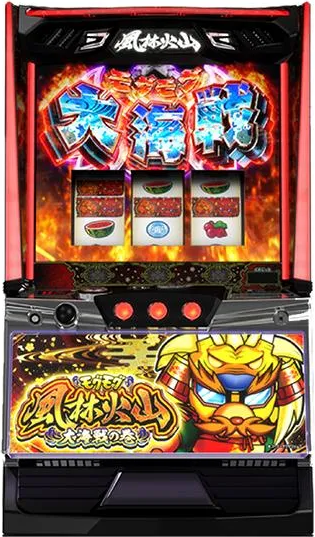

目次

Lモグモグ風林火山 大海戦の巻MOGUMOGU FURINKAZAN ｜ ネット（NET）
モグモグ風林火山 スペック・機械割
CZ確率・AT初当たり・機械割
| 設定 | CZ確率 | AT初当たり | 機械割 |
|---|---|---|---|
| 1 | 1/324 | 1/431 | 97.5% |
| 2 | 1/315 | 1/418 | 98.8% |
| 3 | 1/308 | 1/403 | 99.5% |
| 4 | 1/298 | 1/385 | 104.5% |
| 5 | 1/292 | 1/370 | 108.2% |
| 6 | 1/287 | 1/358 | 111.5% |
期待収支（1日8,000G消化時）
| 設定 | 等価 | 5.6枚交換 |
|---|---|---|
| 1 | -600pt | -1,314pt |
| 2 | -288pt | -968pt |
| 3 | -120pt | -781pt |
| 4 | +1,080pt | +303pt |
| 5 | +1,968pt | +1,095pt |
| 6 | +2,760pt | +1,821pt |
モグモグ風林火山 小役確率
小役確率は現在解析待ちです。導入後に判明次第更新します。
| 項目 | 値 |
|---|---|
| コイン持ち | 約32.0G/50枚 |
モグモグ風林火山 設定判別ポイント
AT初当たり確率
設定1（1/431）〜設定6（1/358）で約20%の差。長時間打てば差が見えてきます。
CZ確率
設定1（1/324）〜設定6（1/287）。AT初当たりと合わせて判別精度を高められます。
設定示唆演出
詳細は解析待ちです。導入後に判明次第更新します。
モグモグ風林火山 天井・リセット
| 項目 | 内容 |
|---|---|
| 周期天井 | 最大6周期でCZ当選 |
| 1周期 | 600pt到達で終了 |
| 設定変更後 | 天井が4周期に短縮 |
1周期あたりのG数は獲得ptペースにより変動します。レア役ほど多くのptを獲得できます。
モグモグ風林火山 AT詳細
通常時の流れ
周期制で「思春期pt」を蓄積し600pt到達で1周期終了。周期終了時にCZを抽選します。レア役やチャンス目でpt大量獲得のチャンス。
全国制覇システム
武将を8人収集すると上位CZ「黒船襲来BATTLE」が確定。武将はハズレやレア役で抽選されます。
CZ（3種類）
| CZ名 | 期待度 | 特徴 |
|---|---|---|
| モグモグ大戦 | 約53% | 通常CZ |
| モグラ叩き | 約70% | 高期待度CZ |
| 黒船襲来BATTLE | 約50% | 全国制覇達成時に突入 |
メインAT「提督決戦RUSH」
| 項目 | 内容 |
|---|---|
| 出玉管理 | 差枚管理型（150〜1,000枚） |
| 純増 | 約3.1枚/G |
| 特化ゾーン | 消化中にモグモグ大海戦を抽選 |
上位AT「超提督決戦RUSH」
| 項目 | 内容 |
|---|---|
| 期待枚数 | 3,500枚以上 |
| 純増 | 約7.4枚/G |
| 突入契機 | モグモグ大海戦経由など（詳細解析待ち） |
特化ゾーン「モグモグ大海戦」
| 項目 | モグモグ大海戦 | モグモグ超海戦 |
|---|---|---|
| 継続率 | 約82% | 約82% |
| 平均上乗せ | 500枚以上 | 1,250枚以上 |
| 性能 | 基準 | 約2.5倍 |
有利区間
コンプリート機能搭載。詳細は解析待ちです。
モグモグ風林火山 打ち方
通常時
順押しで消化。押し順ナビ発生時はナビに従ってください。レア役でpt大量獲得のチャンスです。
やめどき
AT終了後、有利区間リセットを確認してから即やめが基本。設定変更後は天井が4周期に短縮されるため朝一は有利です。全国制覇の武将収集状況も考慮しましょう。
設定判別ツール
総回転数・CZ回数・AT初当たり回数を入力して設定を推測できます。
モグモグ風林火山 よくある質問
モグモグ風林火山 大海戦の巻の設定6機械割は？
設定6の機械割は111.5%です。6段階設定で、メインAT純増約3.1枚/G、上位AT純増約7.4枚/Gのダブル純増仕様です。
モグモグ風林火山の天井は？
周期天井は最大6周期です。1周期は600pt到達で終了し、周期到達時にCZを抽選します。設定変更後は4周期に短縮されます。
全国制覇システムとは？
武将を8人収集するシステムです。8人すべて集めると上位CZ「黒船襲来BATTLE」が確定します。武将の獲得はハズレやレア役で抽選されます。
提督決戦RUSHとは？
メインATで、150〜1,000枚の差枚管理型です。消化中に上乗せやモグモグ大海戦への突入を抽選し、大量出玉を目指します。
超提督決戦RUSHとは？
上位ATで、期待枚数3,500枚以上の大量出玉が期待できます。突入条件は解析待ちですが、モグモグ大海戦経由などで突入します。
モグモグ大海戦とは？
AT中の特化ゾーンで、継続率約82%・平均上乗せ500枚以上です。さらに上位の「モグモグ超海戦」は性能約2.5倍となります。
CZの種類と期待度は？
CZは3種類あります。モグモグ大戦（期待度約53%）、モグラ叩き（約70%）、黒船襲来BATTLE（約50%）です。モグラ叩きが最も期待度が高くなっています。
コイン持ちはどれくらいですか？
通常時のコイン持ちは約32.0G/50枚です。スマスロのためpt管理となります。